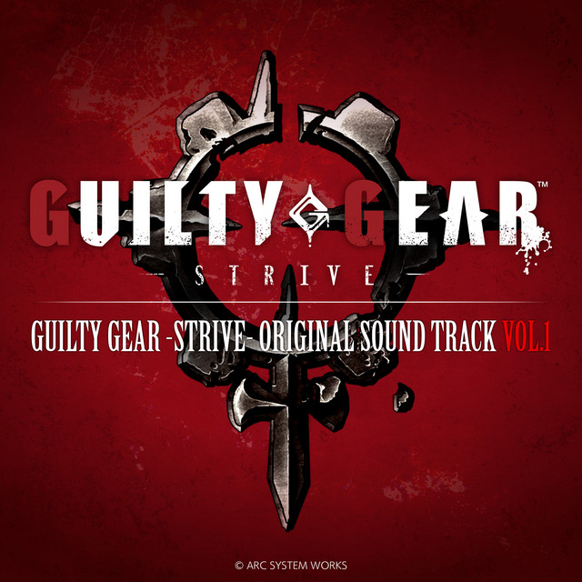
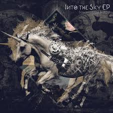

01
Burning D-N-A
Jun Kashiwara, Masaharu Ishikawa
TECHNO / DARK
VOL
MN’s Music Archive +
PLAYLIST +
제가 좋아하는 네 곡을 선별했습니다.
플레이하고 싶은 곡을 선택해주세요.
TRACK LIST
Jun Kashiwara, Masaharu Ishikawa
TECHNO / DARK
NAOKI
ROCK / BURNINGBaoUner
COSMIC / DARK
Sawano Hiroyuki
J-POP / HOPEFULABOUT +
게임 OST와 분위기 중심의 음악을 아카이빙한 개인 포트폴리오입니다. 명일방주와 Monster Siren 특유의 차갑고 산업적인 UI 스타일을 참고해 제작했습니다.
어두운 도시, 기계적인 질감, 투명한 인터페이스와 HUD 스타일을 기반으로 음악 경험 자체를 하나의 UI 시스템처럼 표현했습니다.